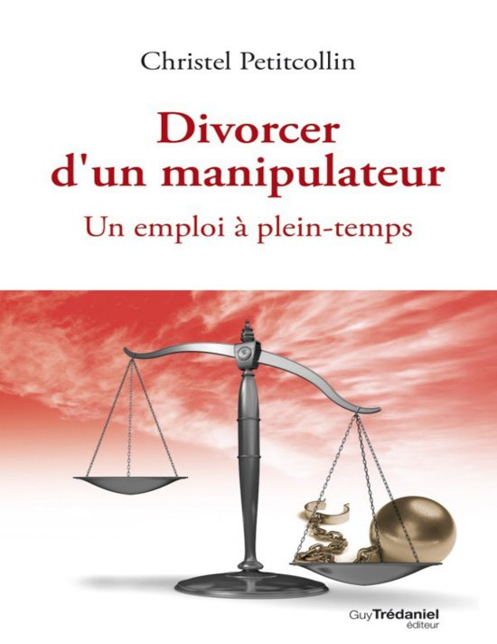

vie-et-societe
Divorcer d’un manipulateur : un emploi à plein-temps

Carte d’identité
- Auteur
- Christel Petitcollin
- Genre
- vie-et-societe
- Pages PDF
- 201
Résumé du livre
Christel Petitcollin décrit les difficultés particulières d’une séparation lorsqu’un partenaire utilise, selon son analyse, des stratégies de manipulation. Elle suit le cheminement qui va de la prise de conscience à la décision de partir, puis aborde la préparation matérielle, la protection de soi, les démarches judiciaires et les conflits qui peuvent persister après la rupture. Le livre cherche à aider le lecteur à anticiper les tensions et à retrouver une marge de décision. Ses catégories psychologiques ne remplacent pas une évaluation clinique et ses conseils juridiques doivent être vérifiés selon la situation et le droit applicable.
Sections du livre · 10 repères paginés
Repères fondés sur les titres et passages du PDF original. Ce sont des extraits de navigation, pas des résumés analytiques de chaque chapitre.
01Du même auteurPDF p. 4
Repère tiré du texte : D U MÊME AUTEUR Parus aux éditions Guy Trédaniel Échapper aux manipulateurs Je pense trop Parus aux éditions Jouvence S’affirmer et oser dire non Bien communiquer avec son enfant Émotions, mode d’emploi Scénario de vie gagnant Les Clés de l’harmonie familiale Réussir son couple Du divorce à la famille recomposée Savoir écouter, cela s’apprend Victime,…
Lire le PDF ↗02IntroductionPDF p. 8
Repère tiré du texte : « Bonjour Madame, Je viens de terminer votre livre Échapper aux manipulateurs et deux impressions s’imposent à moi : — Ce livre m’est personnellement destiné tant il est le reflet de ma vie depuis des années. — Le sujet de ce livre est mon ex-mari, tant sa description correspond à la virgule près. C’est lui à 250 % !!! Je suis divorcée et depuis 10 ans, il…
Lire le PDF ↗03Chapitre 1 — De la rencontre à la décision de partirPDF p. 19
Repère tiré du texte : Un conte de fées ? A un moment où elles prennent la décision de divorcer, les victimes ont un lourd vécu derrière elles. Il est important de connaître tout l’historique de la relation pour comprendre leur comportement. Les brimades, les méchancetés se sont accumulées, laissant des plaies béantes et à vif. Leur estime de soi et leur confiance en l’avenir ont…
Lire le PDF ↗04Chapitre 2 — Qui sont les manipulateurs ?PDF p. 35
Repère tiré du texte : Un personnage standard Comme je vous le disais dès l’introduction, le tableau est incroyablement stéréotypé. C’est pourquoi le manipulateur peut se résumer en quelques données : il a deux visages, quatre ficelles et trois pensées. Sa violence s’exerce en trois temps, elle provoque trois phases de dégâts et se termine en apothéose : un bouquet final de…
Lire le PDF ↗05Chapitre 3 — Qui sont les victimes de manipulation ?PDF p. 72
Repère tiré du texte : Une vision fausse et injuste des victimes L’idée la plus communément admise dans l’opinion publique est qu’il faut être quelqu’un de faible, de naïf et de stupide pour se faire manipuler. La plupart des gens préfèrent croire que ça ne pourrait pas leur arriver. Certains juges, avocats et psys ont même assené de façon péremptoire à mes clients que la…
Lire le PDF ↗06Chapitre 4 — Terminer la sortie d’emprise psychologiquePDF p. 104
Repère tiré du texte : Une période de grande fragilité Avant d’envisager de divorcer physiquement, il faut divorcer mentalement, c’est-à-dire sortir définitivement de l’emprise psychologique. Chercher à quitter un manipulateur alors qu’il a encore le pouvoir de vous retourner la cervelle ou vous rendormir en quelques phrases, est encore plus dangereux que de rester avec lui. De…
Lire le PDF ↗07Chapitre 5 — Préparer son évasionPDF p. 131
Repère tiré du texte : Lorsque l’on divorce d’un manipulateur, on ne peut se permettre aucun faux pas, aucune approximation. Une erreur de jugement peut avoir des conséquences fâcheuses pour vous et pour vos enfants. Il n’est que temps de faire face à la situation avec réalisme et bon sens. Ne faites plus semblant de croire que votre conjoint va être d’accord pour divorcer et que…
Lire le PDF ↗08Chapitre 6 — Bien comprendre l’appareil judiciairePDF p. 151
Repère tiré du texte : Comprendre la loi et le fonctionnement de la justice « Nul n’est censé ignorer la loi. » Malgré ce postulat de base, je suis sidérée par la naïveté de certains de mes clients. Ben non, ils n’ont pas signé de contrat. Ben non, ils n’ont pas gardé les factures. Ben non, ils n’ont pas mis le nez dans les comptes du foyer ces dix dernières années, puisque leur…
Lire le PDF ↗09Chapitre 7 — Gérer la pression au décollagePDF p. 191
Repère tiré du texte : Voila, vous avez maintenant tous les éléments pour sortir de votre état de victime épuisée, vidée, terrorisée. Vous avez pris conscience de votre part de responsabilité. Jusqu’à présent, ce que vous faisiez : plaider coupable, y retourner pour l’apaiser, vous montrer conciliante, c’est-à-dire soumise, et vous refaire maltraiter, a toujours aggravé la…
Lire le PDF ↗10Conclusion — Il y a une vie après ce divorce !PDF p. 198
Repère tiré du texte : Pour vous permettre de tenir bon tout au long de cette rude période, je peux vous en raconter la fin, ou plus exactement la période d’après-guerre. Mes clientes victimes ont retrouvé la paix et ont pu recommencer à vivre selon leurs valeurs de sérénité, d’harmonie et de respect. Leur nouvel entourage correspond tellement mieux à ce qu’elles attendaient de…
Lire le PDF ↗